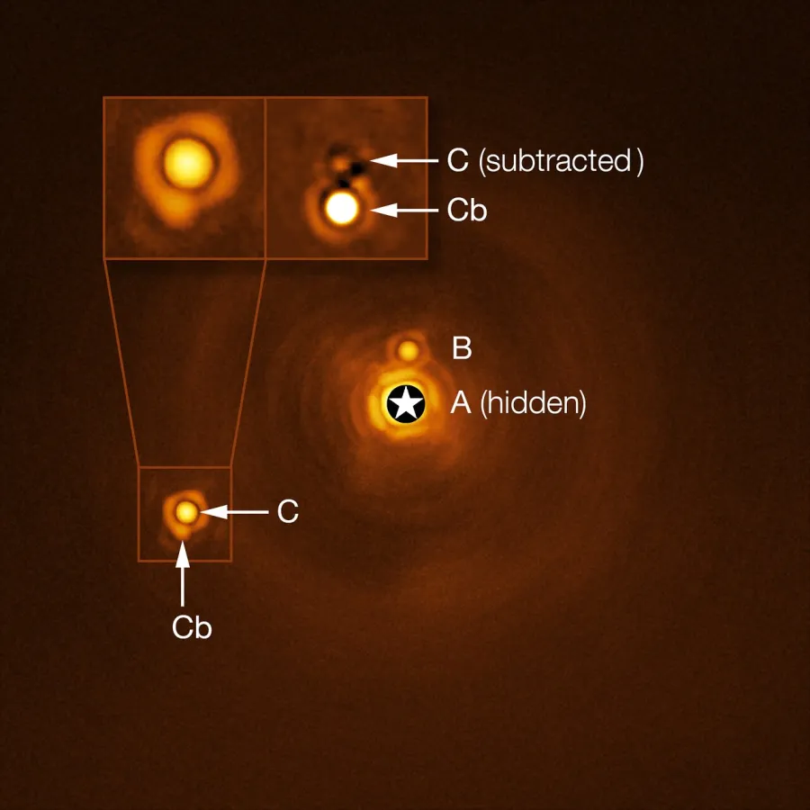

18. September 2023
HIP 81208 Cb: Objekt planetarer Masse in einem Vierfachsystem
In Archivdaten des Instruments SPHERE am Very Large Telescope der ESO wurde im System HIP 81208 ein bisher unbekanntes Objekt gefunden. Das beschriftete Bild zeigt den abgedeckten Zentralstern A, den Braunen Zwerg B und den massearmen Stern C; die Ausschnitte zeigen dessen neu entdeckten Begleiter Cb.
Cb hat etwa 15 Jupitermassen und liegt damit an der Grenze zwischen Planet und Braunem Zwerg. Laut ESO ist HIP 81208 das erste hierarchische Vierfachsystem, das durch direkte Abbildung gefunden wurde.
Quelle: ESO Picture of the Week: "New planetary-mass object found in quadruple system" (potw2338a)., 18.09.2023